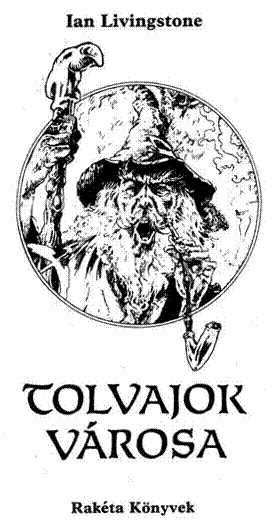
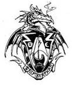
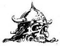
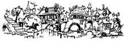
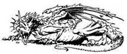
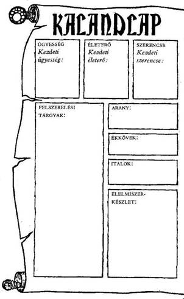
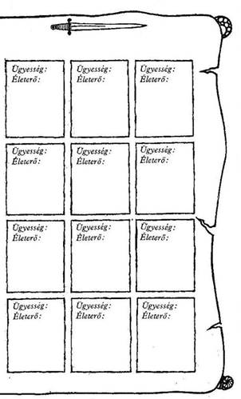
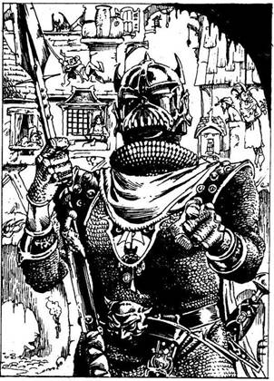

A mű eredeti címe:
Cityof Thieves
Ian McCraig illusztrációival
Fordította:
Varsányi Mária
© Ian Livingstone, 1983
Illustration copyright © Ian McCraig, 1983
Hungarian translation © Varsányi Mária
Ennek a könyvnek te vagy hőse. Te vívsz meg a kocka segítségével az óriásokkal és a szörnyekkel, magad döntesz, hogy merre haladj tovább, kivel barátkozz és kivel csatázz. Nem pusztán az író fantáziája irányítja a történetet, hanem a te bátorságod, kíváncsiságod, leleményességed, kalandvágyad és józan eszed is.
Játék és regény egyszerre, amit a kezedben tartasz. Kalandos vállalkozás, amelybe bele is lehet bukni, de ha jól döntesz, sikerrel jársz.
Így hát ezt a könyvet ne úgy olvasd, ahogy egyébként olvasni szoktál. Mint látod, itt még az oldalak sincsenek megszámozva a bevezető után, hanem a hosszabb-rövidebb bekezdések viselnek számokat egytől négyszázig. Ezek között előre-hátra lapozva haladsz előre a történetben a saját igényeid szerint. Ha kardot rántasz az ellenségre, máshová lapozol, mintha elbújnál előle.
Barbár harcosok, varázslók, szörnyetegek, törpék népesítik be ezt a fantasztikus világot. Mi kell ahhoz, hogy ne bukj el közöttük? Csak az, ami a mindennapi élethez is: ügyesség, jártasság, ötletesség; az, hogy felkészülten várd a nehézségeket.
És Szerencse, amely nélkül az előző három talán mit sem ér, de ha csak erre számítasz, biztosan cserbenhagy.
Hogy mit jelent az ÜGYESSÉG, ÉLETERŐ és SZERENCSE ebben a könyvben, megtudod a következőkből. Ha netán nem lenne teljesen világos a dolog, ne törődj vele; bátran előre! Vágj neki az olvasásnak, menet közben minden a helyére kerül! De ha elfelejtenéd, hogyan kell jól megvívni egy csatát, hogyan menekülhetsz, hogyan gyógyíthatod magad a játék szabályai szerint, nyugodtan visszalapozhatsz.
Hogyan küzdj meg
a Tolvajok városának teremtményeivel?
Mielőtt belevágnál ebbe a kalandba, fel kell mérned, mennyire vagy erős, illetve gyenge. Van kardod és pajzsod az útra, meg egy hátizsákod étellel, itallal. Felkészültél a feladatra, megtanultál a karddal bánni, és keményen edzettél, hogy erős légy.
Dobókockával döntsd el kezdő ÜGYESSÉG és ÉLETERŐ pontjaidat, hogy megtudd, milyen hatékonyak voltak előkészületeid. A 18. oldalon találod a Kalandlapot, amelyre feljegyezheted kalandod részleteit. Ugyanitt jelölheted ÜGYESSÉG és ÉLETERŐ pontjaidat is.
Jól teszed, ha ceruzával írod a pontokat a Kalandlapra vagy fénymásolatot készíttetsz erről az oldalról, hogy újabb játékra is felhasználhasd.
ÜGYESSÉG, ÉLETERŐ ÉS SZERENCSE
Dobj az egyik kockával. Adj 6-ot a dobott számhoz, és az összeget írd be a Kalandlap ÜGYESSÉG négyzetébe.
Dobj mindkét kockával, és az eredményhez adjál 12-t, a kapott számot írd be az ÉLETERŐ négyzetbe.
Van egy SZERENCSE rovat is. Ehhez egy kockával dobj, és 6-ot adj az eredményhez, majd az összeget írd be a SZERENCSE négyzetbe.
Különböző okok miatt, melyeket majd részletesen elmagyarázunk, ÜGYESSÉG, ÉLETERŐ és SZERENCSE pontjaid a kalandok során folyamatosan változnak. Pontosan kell vezetned őket, ezért azt tanácsoljuk, hogy kis betűkkel írj a négyzetekbe vagy tarts kéznél radírt. De soha ne töröld ki a kezdő pontjaidat, mert szerezhetsz ugyan további ÜGYESSÉG, ÉLETERŐ és SZERENCSE pontokat, de összegük soha nem lépheti túl a kezdeti értéket, kivéve néhány nagyon ritka alkalmat, amikor a megfelelő oldalon ezt az utasítást kapod.

ÜGYESSÉG pontjaid kardvívó tudásodat és általános harckészségedet mutatják. Nem árt minél több ilyen pontra szert tenni. Az ÉLETERŐ pontok jelzik kondíciódat, az akaraterődet, hogy túlélj egy-egy helyzetet, továbbá eltökéltségedet és állóképességedet; minél magasabb az ÉLETERŐ pontszám, annál hosszabb ideig maradhatsz életben. A SZERENCSE pontok mutatják, mennyire vagy szerencsés ember.
A szerencse és a varázslat az úr abban a fantasztikus birodalomban, amelybe most behatolsz.
A CSATA
Sűrűn találsz majd olyan oldalakat, ahol azt az utasítást kapod, hogy küzdj meg valamilyen teremtménnyel. Lehet, hogy lesz választási lehetőséged; ha mégsem, vagy ha úgy döntesz, hogy vállalod a harcot, azt a következő módon kell megvívnod:
Először is jegyezd fel a teremtmény ÜGYESSÉGÉT és ÉLETEREJÉT a Kalandlapod első üres, „Harc Szörnyekkel” feliratot viselő rovatába. A teremtmények pontszámait minden alkalommal megadja a könyv, amikor összecsapsz valamelyikükkel.

A harc menete
MENEKÜLÉS
Bizonyos oldalakon eldöntheted, hogy megfutamodsz- e a csatából, ha a dolgok rosszul alakulnak. Ám ha megfutamodsz, menekülés közben a teremtmény automatikusan sebet ejt rajtad (ezért 2 ÉLETERŐ pontot kell levonnod.) Ez a gyávaság ára. Ám a szokásos módon ilyenkor is hasznát veheted a SZERENCSÉNEK (lásd később). De csak akkor menekülhetsz, ha az adott oldalon erre külön megkapod a lehetőséget.

CSATA EGYNÉL TÖBB TEREMTMÉNNYEL
Ha egyszerre egynél több lénnyel kerülnél összeütközésbe, mindig közöljük veled a harcra vonatkozó utasítást az adott pont alatt. Néha egyszerre kell velük megküzdened, néha meg mindegyikkel külön-külön.

SZERENCSE
Kalandjaid során, akár csatában, akár olyan helyzetekben, amikor a SZERENCSE dönthet sorsod felől (az erre vonatkozó utasítást az adott fejezetpontok alatt megkapod), a SZERENCSÉDRE is számíthatsz, hogy az események kimenetele számodra kedvező legyen. De vigyázz! A SZERENCSÉRE számítani kockázatos, és ha balszerencsés vagy, az eredmény végzetes lehet.
SZERENCSÉDET a következő módon teheted próbára. Dobj mindkét kockával. Ha a kapott szám ugyan- annyi vagy nem nagyobb, mint a jelenlegi SZERENCSE pontszámod, az eredmény kedvező. Ha magasabb számot dobsz, mint a jelenlegi SZERENCSE pontszámod, balszerencséd volt, és vállald a következményeit.
Úgy hívjuk ezt, hogy „Tedd próbára a SZERENCSÉDET!”. Minden alkalommal, amikor próbára teszed a SZERENCSÉDET, 1 pontot le kell vonnod SZERENCSE pontszámodból. Így hamar rájössz, hogy a SZERENCSÉRE hagyatkozni kockázatos.
A SZERENCSE használata csatában
A könyv bizonyos oldalain felszólítunk, hogy Tedd próbára SZERENCSÉDET!, és közöljük, hogy SZERENCSÉD volt-e vagy sem. A csatákban viszont mindig te döntesz, hogy a SZERENCSÉD segítségével megpróbálsz-e komolyabb sebet ejteni azon a teremtményen, amelyet éppen megsebeztél, vagy csökkenteni próbálod-e annak a sebnek a hatását, amelyet a teremtménytől elszenvedtél.
Ha te sebezted meg a teremtményt, a fent leírt módon Tedd próbára a SZERENCSÉDET! Ha szerencsés vagy, komoly sebet ejtettél rajta, és 2 külön pontot levonhatsz a teremtmény ÉLETEREJÉBŐL. Azonban, ha balszerencse ért vagy a seb puszta karcolás, az 1 pontot vissza kell adnod ellenfeled ÉLETERŐ pontjaihoz. (Tehát: a szabályos 2 pont levonás helyett most csak 1 pontot vonhatsz le tőle.)
Ha a teremtmény sebzett meg téged, azért Tedd próbára a SZERENCSÉDET!, hogy enyhítsd a sebet. Ha SZERENCSÉD van, sikerült elkerülnöd a teljes csapást. 1 pontot visszaadsz magadnak (2 pontos kár helyett csak 1 pontos kár keletkezett az ÉLETERŐDBEN). Ha nem voltál szerencsés, komolyabb találat ért, plusz 1 ÉLETERŐ pontot vonj le magadtól.
Ne feledd, hogy minden alkalommal le kell vonnod 1 pontot adott SZERENCSE pontszámodból, ahányszor Próbára teszed a SZERENCSÉDET!
AZ ÜGYESSÉG, ÉLETERŐ
ÉS SZERENCSE VISSZAÁLLÍTÁSA
A KEZDETI ÉRTÉKRE
ÜGYESSÉG
ÜGYESSÉG pontjaid sokat fognak változni kalandjaid során. Helyenként, egy-egy oldalon olyan utasítást találsz, hogy növeld vagy csökkentsd ÜGYESSÉG pontjaid számát. Egy csodafegyver növelheti ÜGYESSÉGEDET, de ne feledd, hogy egyszerre csak egy fegyvert használhatsz. Nem tarthatsz igényt 2 ÜGYESSÉG jutalompontra, mert két varázskardod van. ÜGYESSÉG pontjaid száma soha nem lépheti túl az eredeti értékét, hacsak külön utasítást nem kapsz rá. Ha iszol az ÜGYESSÉG Italából (lásd később), bármikor a kezdeti értékére áll vissza ÜGYESSÉGED.
ÉLETERŐ ÉS ÉLELMISZER
ÉLETERŐ pontjaid sokszor fognak változni kalandjaid során, amint megküzdesz a szörnyekkel és lelkesítő feladatokat vállalsz. Ahogy célodhoz közeledsz, ÉLETERŐ pontjaid száma veszélyesen csökkenhet, és a csaták különösen kockázatossá válnak, ezért légy óvatos!
Hátizsákodban tíz étkezésre elegendő élelmiszer van. Bármikor megállhatsz pihenni és enni, kivéve ott, ahol erre más utasítást kapsz. Minden étkezés 4 pontot ad ÉLETERŐ pontjaidhoz, és 1 ponttal csökkenti Élelmiszer-tartalékodat. A Kalandlapon külön Élelmiszer- készlet rovat van, hogy feljegyezd, mennyit fogyasztottál. Ne feledd, hogy hosszú utat kell megtenned, ezért bölcsen használd fel Élelmiszerkészletedet!
Azt se feledd, hogy ÉLETERŐ pontjaid száma soha- sem lépheti túl a kezdeti értéket, kivéve, ha egy adott oldalon ezt az utasítást kaptad. Ha megiszod az ERŐ italát (lásd később), bármikor eredeti szintjére állíthatod ÉLETERŐDET.

SZERENCSE
SZERENCSE pontjaidhoz továbbiakat szerezhetsz kalandjaid során, ha kivételesen SZERENCSÉS vagy. Ennek részleteit megtalálod a könyvben. Ne feledd, hogy az ÜGYESSÉGHEZ és az ÉLETERŐHÖZ hasonlóan SZERENCSE pontjaid sem léphetik túl kezdeti értéküket, kivéve, ha egy-egy oldalon ezt az utasítást kapod. A SZERENCSE Italát felhörpintve (lásd később) bármikor kezdeti értékére állíthatod vissza SZERENCSÉDET, és 1 ponttal növelheted kezdeti SZERENCSÉDET.
FELSZERELÉS ÉS ITALOK
Minimális felszereléssel kezded kalandodat, de utad során találhatsz vagy beszerezhetsz ezt-azt. Karddal vagy felfegyverezve, és bőrpáncélt viselsz. Hátizsákodban étel, ital lapul, és azok a kincsek, amelyeket megszerzel. Lámpásod is van, amely megvilágítja az utadat.
Emellett magaddal vihetsz egy palackkal a Varázsitalból; ez segít rajtad a kutatás során. A következő palackok bármelyikét választhatod:
Az ÜGYESSÉG ITALA - kezdeti értékére állítja vissza ÜGYESSÉG pontjaidat.
Az ERŐ ITALA - kezdeti értékére állítja vissza ÉLETERŐ pontjaidat.
A SZERENCSE ITALA - kezdeti értékére állítja vissza SZERENCSE pontjaidat, és 1 ponttal növeli kezdeti SZERENCSÉDET.
Kalandjaid során bármikor kortyolhatsz a magaddal vitt italból (kivéve, amikor harcban állsz). Ezeknek az italoknak egy adagja visszaállítja ÜGYESSÉGED, ÉLETERŐD vagy SZERENCSÉD kezdeti értékét (és a SZERENCSE ITALA 1 ponttal növeli kezdeti SZERENCSÉDET).
Minden palack két adag varázsitalt tartalmaz, tehát kétszer élhetsz vele kalandjaid során. Jegyezd fel a Kalandlapon, ha elhasználtad.
Azt se feledd, hogy a háromféle ital közül csak az egyiket viheted magaddal az útra, válassz tehát bölcsen!
TANÁCSOK A JÁTÉKHOZ
Egyetlen helyes út vezet el a Tolvajok Városába, de csak többszöri próbálkozásra találod meg. Jegyzetelj, s készíts térképet utad során, ez felbecsülhetetlen értékű lesz az elkövetkező kalandjaidban, és segít, hogy gyorsan keresztüljuss a felderítetlen részeken. Nem találsz mindenütt kincseket. Sokszor csupán csapdák vagy olyan lények várnak rád, melyekkel összeütközésbe kerülsz.
Gyakran fogsz rossz irányba menni, de végül is majd megtalálod azt, amit keresel.
Hamar rájössz, hogy a fejezeteket nem szabad egymást követő sorrendben olvasnod. Csak azt a fejezetet olvasd el, amelyet az utasításban megadnak! Egyébként csak összezavarodsz, és játék sem lesz az igazi.
Az egyetlen igazi út minimális kockázatot jelent, és minden játékos, függetlenül attól, milyen pontokkal is vág neki, elég könnyen végigmehet rajta.
Kísérjen szerencse kalandjaid során! Sok sikert!



Háttértörténet
Kalandra vágyva járod a szörnyek és varázslatok világát, és csak gyors eszedre, no meg kardforgató kezed ügyességére támaszkodhatsz. A pénzedet eddig zsoldosként kerested, rendszerint gazdag nemesemberek és bárók szolgálatában, olyan megbízásokat teljesítve, amelyek túl veszélyesnek vagy túl nehéznek bizonyultak e nemesek saját emberei számára. Megszoktad már, hogy titokzatos kincsek után kutatva szörnyeket és félelmetes vadállatokat mészárolsz le. Lévén tapasztalt és igen jól képzett kardforgató, semminek és senkinek nem engeded meg, hogy az utadba álljon. Eddigi küldetéseid mind sikeresek voltak, és erről ország-világ tud. Amikor felbukkansz egy faluban vagy városban, jöttöd híre futótűzként terjed el a helybéliek között, mivel eleddig még kevesen láttak valódi sárkányölőt.
Egy este, hosszú út után, megérkezel Silvertonba, mely a vidék kereskedelmi útvonalainak találkozásánál fekszik. Ebben a városban gyakorta látni nagyméretű, fából készült, ökrök vontatta társzekereket, melyek gyógyfüvekkel, fűszerekkel, selymekkel, fémáruval és távoli országokból való egzotikus élelmiszerekkel megrakodva gördülnek tova.
Silverton az évek során azon gazdagodott meg, hogy a távoli piacok felé tartó kereskedők és boltosok itt álltak meg bevásárolni. A város gazdagsága szembeszökő. Erről árulkodnak a díszes épületek és a jól öltözött emberek. A városkapun belépve azonban olyan érzésed támad, mintha nem volna itt minden rendben. Az emberek idegesnek, feszültnek látszanak. Aztán észreveszed, hogy az épületek ablakain mindenütt nagy vasrácsok vannak, és az ajtókat is jó erősen elreteszelték. Bár jobban szeretsz egyedül lenni, mégis úgy döntesz, hogy az éjszakát Silvertonban töltöd és kideríted, mi aggasztja az ittenieket.
Ahogyan végigmész a főutcán, egyetlen harangcsendülést hallasz a szemközti magas toronyból. Aztán egy férfi csaknem kétségbeesett kiáltása hallatszik:
"Itt az éjszaka! Itt az éjszaka! Mindenki haza!" Aggodalmas pillantású emberek sietnek el melletted, és meglepődnek, amikor észrevesznek. Az utca túloldalán felfigyelsz egy fogadóra, melynek cégérén ez áll: "Az Öreg Varangyhoz". Amikor belépsz, moraj fut végig a termen - felismertek. Némelyek leteszik a korsójukat, és rád bámulnak. Kissé meglep, hogy senki nem jön oda hozzád a kalandjaid felől faggatózni. Odamész a pulthoz, hogy az öreg fogadóstól szobát és meleg fürdőt kérj, ám ő ügyet sem vetve rád egyenesen odarohan a nagy tölgyfa ajtóhoz, és hat jókora vaspánttal elreteszeli. Csak ezután fordul oda hozzád, és halkan így szól: "Az annyi lesz, mint öt rézgaras a szobáért és még egy a fürdőért, előre fizetendő, ha lehetséges". Benyúlsz az öveden lógó bőrbugyellárisba, és a pultra hajítod a pénzdarabokat. Kapsz a fogadóstól egy vaskulcsot, de épp akkor, amikor elvennéd, kopogás hallatszik az ajtón, s egy hang ezt kiáltja:
"Nyissátok ki! Nyissátok ki! Owen Carralif vagyok!" Az öreg fogadós odasiet az ajtóhoz, és elhúzza a vasreteszeket. A nyitott ajtón egy díszes bíborköpenybe bújt kövér, kopaszodó férfi nyomul be az ivóba, és sebesen körbepillant. Észrevesz, és nagy dérrel-dúrral elindul feléd. Látszik rajta, hogy nem szokott a sietséghez, hiszen a helyiséget bevilágító gyertyák pislákoló fényében nagy izzadságcseppeket veszel észre a homlokán. Amint a közeledbe ér, gyorsan megszólít: "Hallgass ide, idegen! Beszélnem kell veled! Kérlek, ülj le. Nagyon fontos, hogy szót váltsunk!"
Amikor a férfi odafordul a fogadóshoz és egy csettintéssel ételt és italt kér, nyilvánvalóvá válik számodra, hogy az ismeretlen tekintélyes ember lehet, de az arca szomorúságról és bánatról árulkodik. Mivel kíváncsi vagy, ki lehet ő, úgy döntesz, meghallgatod. A férfi odahúz neked egy széket, int, hogy ülj le az asztalához, a fogadós pedig forró húslevessel, sült libával és mézborral megrakott tálcával kerül elő. A bíborköpenyes férfi némán ül veled szemben, úgy bámul, miközben lakomázol, mintha valami célja volna veled. Végül, amikor eltolod magadtól a tálcát, közel hajol hozzád, és fojtott, aggódó hangon így szól: "Hallgass meg, idegen! Tudom, ki vagy, és szükségem van a segítségedre. Owen Carralifnek hívnak, én vagyok Silverton polgármestere. Nagy bajok és veszélyek közepette élünk itt. Elátkoztak bennünket, és nekem kell a várost megszabadítanom az átoktól. Tíz nappal ezelőtt a Gonosz két küldönce lovagolt be e helyre nagy, fekete méneken. A lovaknak tüzes, vörös szemük volt! A lovasok arcát nem lehetett látni, mert hosszú, fekete csuklyás köpenyük eltakarta azt. Jéghideg hangon szólaltak meg, és minden szavuk idegesítő sziszegésbe ment át. Név szerint engem kerestek, és amikor előjöttem, hogy köszöntsem őket, kijelentették, hogy magukkal akarják vinni szeretett lányomat, Mirelle-t gazdájuknak, Csontos Zanbarnak. Biztosan tudod, hogy ő az Éj Hercege. Természetesen visszautasítottam a kívánságukat, mire szó nélkül megfordultak, és fejüket lehajtva, görnyedt háttal lassan kilovagoltak a városból. Tudtam, hogy a csuklyás köpenyek alatt a Lélekvadászok üres csontvázteste bújik meg. Csontos Zanbar mindig küldöncnek használja őket, mivel vagy teljesítik a küldetésüket, vagy meghalnak - márpedig nem halnak meg egykönnyen. Ezeket a gonosz lényeket csak a szívükön áthatoló ezüst nyílvessző képes megfosztani örökkön-örökké tartó homályos létüktől. És ki tudja, mi minden kell ahhoz, hogy valaki Csontos Zanbart elpusztítsa! Nos, ami bajaink még azon az éjszakán elkezdődtek, amikor a Lélekvadászok elhagyták a várost. Az Éj Hercege dühös volt, és eltökélte, hogy megbüntet bennünket. Hat borotvaéles fogú Holdkutyát küldött ránk, amelyek egyenként négy emberrel is elbírnak. A kutyák végigjárták a várost, a nyitva hagyott ablakokon át behatoltak a házakba, és mindenkit megöltek, akit benn találtak.
Reggel huszonhárom halottat számoltunk össze. Berácsoztuk az ablakainkat, és elreteszeltük az ajtóinkat, de a Holdkutyák azóta is minden éjszaka visszajönnek, s mi nem tudunk aludni, mert attól félünk, hogy esetleg mégis bejutnak az otthonainkba. Egyesek most arról beszélnek, hogy Mirelle-t mégiscsak el kellene küldeni Csontos Zanbarnak. Gyáva árulók, megérdemelnék, hogy megkorbácsoltassam őket! De mi haszon származna ebből? Csak egyvalakiben reménykedhetünk, és az te vagy, idegen. Létezik egy Nikodémusz nevű ember, aki érthetetlen okokból Feketehomok kikötőben él. A helyet egyszerűen csak a Tolvajok Városának hívják, mert több száz kilométeres körzetben nincs olyan kalóz, briganti, gyilkos, tolvaj és
gonosztevő, aki ne ott élne. Úgy gondolom, Nikodémusz azért telepedett ott le, hogy ne háborgassák a magunkfajta emberek. Bölcs öreg varázsló, akinek még Feketehomok kikötőben sem igen lehet ártani, mert akkora varázsereje van. Csak ő képes rá, hogy legyőzze Csontos Zanbart. Sok évvel ezelőtt a barátom volt. Szükségünk van rá, és könyörögve kérlek téged, hozd el őt ide. Feketehomok kikötőbe senki sem mer elmenni a mieink közül. Ha segítesz, idegen, szép jutalom üti a markodat. Itt ez a harminc arany az útiköltségre, és fogd ezt a kardot is, hasznát veszed majd utad során."
Owen Carralif feláll, hátrabillenti bíborköntösét, és alóla előbukkan egy gyönyörű, széles kard, amilyet soha ember még nem látott. Átnyújtja neked, s miközben végigsimítod a pengét, meglepődve látod, hogy ujjadból egy csepp vér csordul ki. Aztán megvizsgálod a csodálatosan díszes, két aranyszegélyű kígyót, melyek a markolatot fonják körül. Soha semmit nem akartál ennyire, mint ezt a kardot. Felállsz, és kezet nyújtasz Owennek. Boldogan kezet ráz veled, és így szól: "Pirkadatkor indulnod kell. A Holdkutyák addigra már elmennek. Ma én is itt töltöm az éjszakát, így hát igyunk arra, ami ránk vár, és Isten legyen mindkettőnkkel!"
Owen ezt követően vagy egy órán át mesél arról, hogyan kell eljutnod Feketehomok kikötőbe. Később összeszeded az útiholmidat meg a prémjeidet, és elindulsz felfelé a falépcsőn a szobád felé. Nem alszol jól, mert az új kardod biztonságot ad ugyan, de többször felébredsz a kinn randalírozó Holdkutyák morgására, kaparászására és üvöltésére. Hajnaltájt már ébren vagy, fel is öltöztél, s eldöntötted, hogy amilyen gyorsan csak lehet, eljutsz Feketehomok kikötőbe és felkutatod
Nikodémuszt. Amint kilépsz a fogadóból, egy fekete macska surran el a lábad előtt, és majdnem hasra esel: Lehet, hogy ez rossz előjel?
ÉS MOST Lapozz az 1-re!

